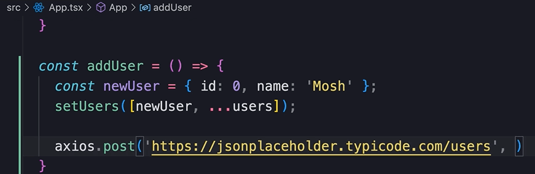
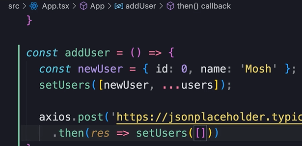
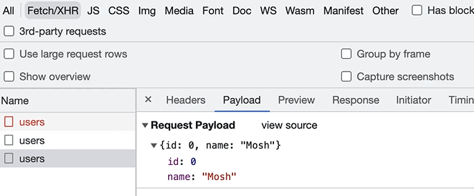
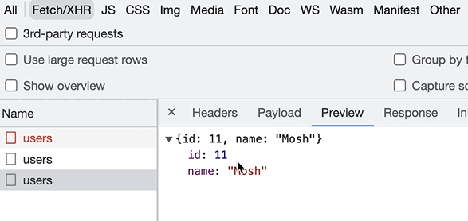
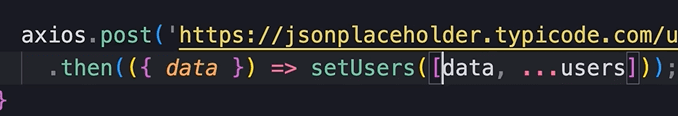
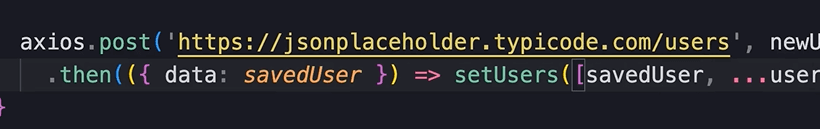

HOME
Creating Data
Create a button
To create data we are going to add a button right above the list.
In a real application we would need a form to add a user, but that
would be a distraction from what we are actually doing here.
onClick
Next, set the onClick to a function called 'addUser'...
Now we create the function...
In this function we are going to use an optimistic update.
We learned about optimistc updates last lesson.
What it means is that we update the UI first and then call the server
to save the changes.
NewUser Object
So let's create a new user object...
We have hard coded the data here, but in a real app this information
would be taken from a form.
Next, we call setUsers to a new array, with the existing users spread,
and add the new user...
We could do this if we wanted...
Now if we go to the browser and click add, we will see the user get
added.
Save changes to the server
Now we need to call the server to save the changes.
So we call axios.post() and pass a url.
Grab the users endpoint from jsonPlaceholder.
And paste it in...

Now we need to include the new user in the body of the request.
So as a second arg to the post method we pass our new object...
If the call to the server is successful then...

We should refresh our list with the saved user, because the new user
has an id that is going to be genrated on the server.
So we get a respone obj and call setUsers to an array...

In that array we pass res.data so that the new user will be included
in the body of the response...
Lastly, spread the users array.
I know that was alot. Read it again.
IMPORTANT NOTE
So now if we click the add user button it adds the user and in the
network tab of devtool we can see that a post request happened...
You can see that the method is POST, that is used for creating data.
In the body, or 'payload' of this request, we can see the user object
from our code...

Then in the body of the response we see the same user obj but the id
is set to 11...

so this id is generated on the server.
What you must understand about jsonPlaceholder is that this IS A FAKE
BACKEND.
So if you send this req multiple times, every single time we get a
user with the id of 11.
üí° THAT means, if you add a second new user we get an err in the
console saying the it encountered two children with the same key.
You know that when mapping items in jsx, we should give each element a
unique id,
but in this case we dont have a unique key because the last two user
objects have the same id.
Be aware of that, this is just because we have a fake backend.
More readable post code
So we sent a request to the server, if its succeeds, then we set the
users to the user that was saved.
But here, we set setUsers to res.data...
This does what we want, but the readability of the code is bad.
So, since we need to access the data property of the response,
we can destructure the response, and grab the data property in the
parameter of the callback.
Just use braces inside parenthesis ({})...

üí°But we can make this EVEN BETTER
ü걂Äçüèçü§ò
We can give an alias to data!!

Handle errs
Now, if we encounter an err, we should show the user an err msg, and
restore the list back to the original state before the err.
So catch the err and setError to message...
Next we want to reset the list to the original state.
So we create an array to hold the original users...
And then set the users back if there is an err...
Now if we simulate an err we will see a message and the list will be
restored back to the original state.